COOK - 1892.

Return To Catalogue - Oneglia forgeries, introduction, part 1 - Oneglia forgeries, introduction, part 2 - Panelli - Spiotti - Venturini
Note: on my website many of the
pictures can not be seen! They are of course present in the
catalogue;
contact me if you want to purchase it.
Erasmo Oneglia was an Italian forger in the late 19th century from Turin. He is famous for his engraved forgeries, but he also made photo-lithographed forgeries. Many of his forgeries were previously attributed to the forger Angelo Panelli. The engraved Oneglia forgeries are usually 'overinked'. When Oneglia applied a watermark on his forgeries, it is very clearly visible. His watermarks are impressed instead of being real watermarks. Oneglia also collaborated closely with A.Venturini and E.Spiotti. The exact relationships that these forgers had is not clear up to this day.
Oneglia forgeries, 1906 catalogue, Supplement, part 1
CANTON. - 1901. |
|||
| Number | Year | Description | Price in Fr. |
| 1 | 50 c T. Indo Chine avec surcharge....................................................................................................... | Fr. 0.40 | |
| 2 | 75 c T. Indo Chine avec surcharge | Fr. 0.40 | |
| 3 | 1 f T. Indo Chine avec surcharge | Fr. 0.50 | |
| 4 | 5 f T. Indo Chine avec surcharge | Fr. 1.50 | |
These are obviously the same forgeries that
Oneglia made for Indo China.
However, thus far I have only seen forgeries of Canton, made by
the forger Fournier.
COOK - 1892. |
|||
| Number | Year | Description | Price in Fr. |
|
|||
| 1 | 1892 | 1 p. noir | Fr. 0.20 |
| 2 | 1 1/2 p. mauve | Fr. 0.40 | |
| 3 | 2 1/2 p. blue | Fr. 0.40 | |
| 4 | 10 p. carmin | Fr. 1.50 | |
The "S"s of "ISLANDS" are more open than in the genuine stamp. The word "POSTAGE" is thinner. I believe this forgery type was made by Oneglia, since it was found in a batch with other Oneglia forgeries.
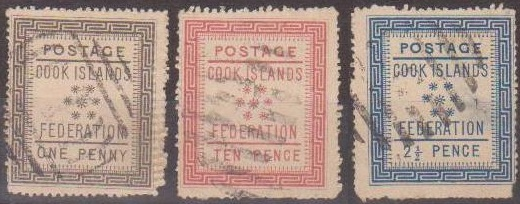
Here some other Oneglia forgeries with "APIA" cancel.
(Apia is in Samoa) and some other unreadable cancels.
CHAMBA - 1886. |
|||
| Number | Year | Description | Price in Fr. |
| 1 | 1886 | 1 r. gris avec en surcharges CHAMBA STATE ............................................................................... | Fr. 1.50 |
| 2 | 1886 | 1 r. gris avec en surcharges SERVICE CHAMBA STATE | Fr. 1.50 |
I presume Oneglia used the same basic forgery type as for example the one used for Faridkot, although I have not seen this Chamba forgery.
CHILI - 1853 - fil. chif. |
|||
| Number | Year | Description | Price in Fr. |
| 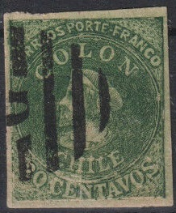 |
|||
| 3 | 1853 | 5 c. rouge brun s. az. ......................................................................................................................... | Fr. 0.20* |
| 4 | 10 c bleu vif | Fr. 1.-- | |
| 5 | 5 c. br. orange report. lit. local 1854 | Fr. 2.50* | |
| 6 | 5 c. br. rouge 1854-57 | Fr. 0.50* | |
| 7 | 10 c. bleu 1854-57 | Fr. 0.50 | |
| 8 | 1861 | 1 c. jaune olive 1861 | Fr. 0.70* |
| 9 | 20 c. vert | Fr. 1.-- | |
In his foreword to the Supplement, Oneglia
mentions that the stamps marked with a "*" will only be
ready by the end of the month.
I presume the first above shown Chile 20 c forgery is indeed the
one made by Oneglia, since it was found in a collection with many
Oneglia forgeries. The second 20 c stamp was clearly made by him,
since it has a bars with "G" cancel that was often
applied to other Oneglia forgeries.
CEYLAN - 1857 - fil. * |
|||
| Number | Year | Description | Price in Fr. |
| 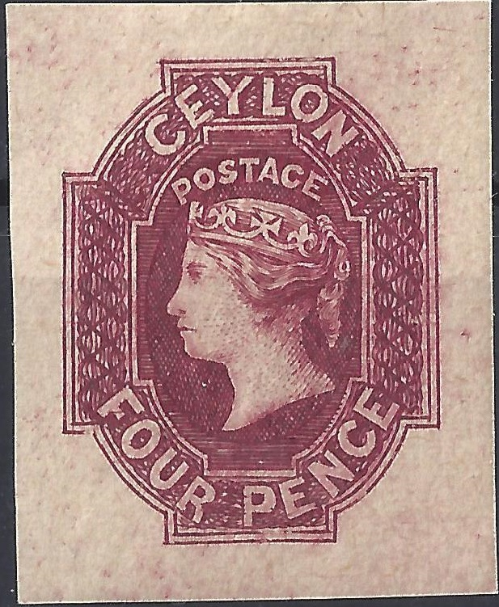 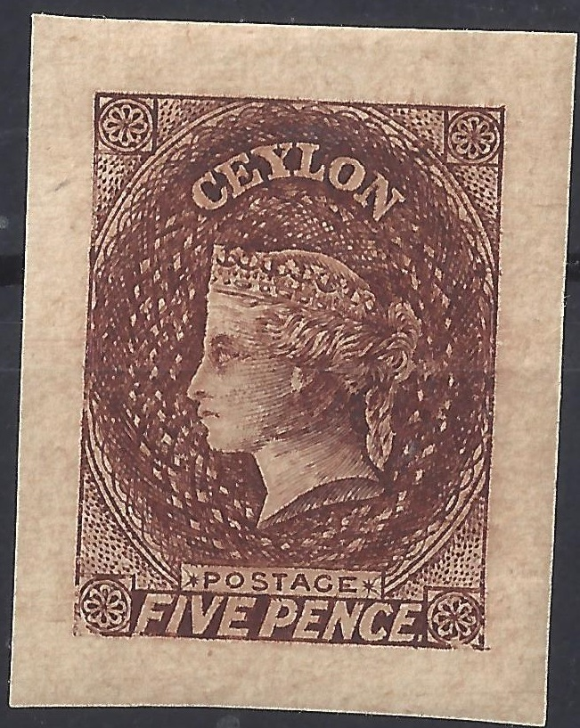 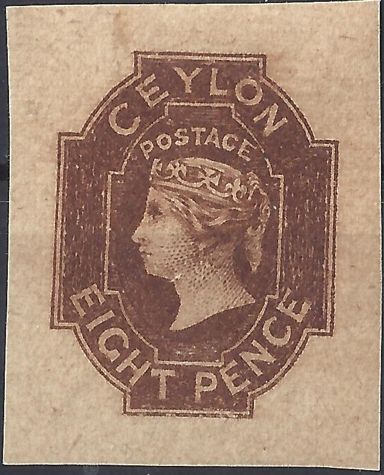 |
|||
| 1 | 1857 | 1 p. bleu | Fr. 0.40* |
| 2 | 1 p. bleu s. az. | Fr. 0.50* | |
| 3 | 2 p. vert jaune | Fr. 0.70* | |
| 4 | 2 p. vert fonce | Fr. 0.70 * | |
| 5 | 4 p. rose | Fr. 10.--* | |
| 6 | 5 p. brun rouge | Fr. 1.-- | |
| 7 | 6 p. brun | Fr. 1.-- | |
| 8 | 6 p. brun s. az. | ||
| 9 | 8 p. marron | Fr. 10.--* | |
| 10 | 9 p. brun violet | Fr. 3.--* | |
| 11 | 10 p. vermillon | Fr. 1.50* | |
| 12 | 1 s. violet | Fr. 1.--* | |
| 13 | 1/9 s. vert | Fr. 2.50* | |
| 14 | 2 s. bleu | Fr. 3.--* | |
| id. dent. 14 x 16: | |||
| 15 | 1 p. bleu | Fr. 0.20* | |
| 16 | 2 p. vert jaune | Fr. 1.--* | |
| 17 | 4 p. rose | Fr. 1.25* | |
| 18 | 5 p. brun rouge | Fr. 0.25* | |
| 19 | 6 p. brun | Fr. 1.-- | |
| 20 | 8 p. brun rouge | Fr. 3.--* | |
| 21 | 8 p. brun rouge | Fr. 3.--* | |
| 22 | 9 p. gris brun | Fr. 1.--* | |
| 23 | 10 p. vermillon | Fr. 0.75* | |
| 24 | 1 s. lilas | Fr. 0.50* | |
| 25 | 1/9 s. vert | Fr. 3.--* | |
| 26 | 2 s. bleu | Fr. 2.--* | |
| id. sans fil. dent. 12 x 13: | |||
| 27 | 1 p. bleu | Fr. 0.50* | |
| 28 | 5 p. brun rouge | Fr. 1.50 | |
| 29 | 6 p. brun fonce | Fr. 1.-- | |
| 30 | 9 p. brun olive | Fr. 1.--* | |
| 31 | 1 s. violet | Fr. 1.--* | |
| id. fil. C. C. dent. 12 1/2: | |||
| 32 | 5 p. brun rouge | Fr. 2.-- | |
In his foreword to the Supplement, Oneglia mentions that the stamps marked with a "*" will only be ready by the end of the month.
COTE
D'OR - 1875. |
|||
| Number | Year | Description | Price in Fr. |
| 1 | 1875 | 1 p. bleu fil. C. C. dent. 12 | Fr. 2.-- |
| 2 | 1 p. violet fil. C. C. dent. 12 | Fr. 3.-- | |
| 3 | 6 p. orange fil. C. C. dent. 12 | Fr. 1.50 | |
| 4 | 1884 | 1/2 p. bistre fil. C. A. dent. 14 1884 | Fr. 1.-- |
| 5 | 1 p. bleu fil. C. A. dent. 14 | Fr. 1.50 | |
| 6 | 2 s. brun fil. C. A. dent. 14 | Fr. 0.30 | |
| 7 | ONE PENNY s. 6 p. fil. C. A. dent. 14 | Fr. 0.60 | |
The above forgeries have a bars with "1" cancel.
Here a 6 p Oneglia forgery with a more convincing "B27"
cancel pasted on a small piece of paper.
DOMINIQUE - 1874 fi. C. C. dent 12. |
|||
| Number | Year | Description | Price in Fr. |
| 1 | 1874 | 1 p. violet | Fr. 0.50 |
| 2 | 6 p. vert | Fr. 1.50 | |
| 3 | 1 s. rose lile | Fr. 1.25 | |
| 4 | 2 1/2 p. brun rouge | Fr. 1.50 | |
| 5 | 6 p. vert | Fr. 1.50 | |
| 6 | 1 s. rose lile | Fr. 1.50 | |
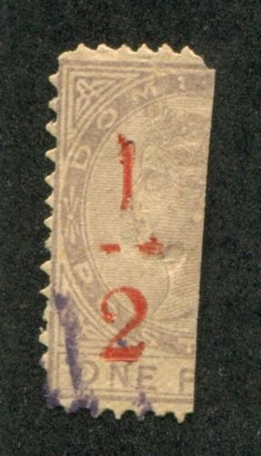 |
|||
| 7 | 1/2 s. moit. de 1 p. 1879 coupé noir | Fr. 1.50 | |
| 8 | 1/2 s. moit. de 1 p. 1879 coupé rouge | Fr. 0.50 | |
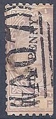 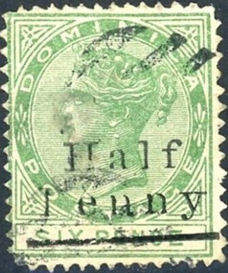
|
|||
| 9 | HALF PENNY s. 1 p. 1879 coupé noir | Fr. 1.50 | |
| 10 | HALF PENNY s. 6 p. 1886 coupé noir | Fr. 0.50 | |
| 11 | ONE PENNY s. 6 p. 1886 | Fr. 5.-- | |
| 12 | ONE PENNY s. 1 s. 1886 | Fr. 0.50 | |
| 13 | 1 s. rose lila 1883 fil. C.A. | Fr. 2.50 | |
| 14 | 1 s. rose lila avec REVENUE en s. C.C. | Fr. 1.25 | |
| 15 | 1 s. rose lila avec REVENUE en s. C.A. | ||
| 16 | 6 p. vert avec REVENUE en s. C.C. | ||
ETATS CONF. D'AMERIQUE. |
|||
| Number | Year | Description | Price in Fr. |
| 1 | 1862 | 2 c. brun rouge 1862............................................................................................................................. | Fr. 0.60 |
An image of this forgery can be found in the book 'The Oneglia Engraved Forgeries by Robson Lowe & Carl Walske (1996)'.
ETATS UNIS D'AMERIQUE. |
|||
| Number | Year | Description | Price in Fr. |
| 9 | 1847 | 5 c. brun s. azur 1847............................................................................................................................. | Fr. 0.60 |
| 10 | 10 c. noir s. azur 1847 | Fr. 1.-- | |
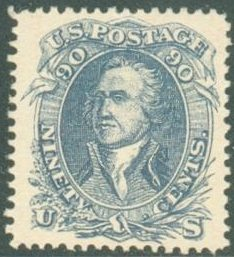 |
|||
| 11 | 90 c bleu 1861 | Fr. 3.-- | |
FARIDKOT - 1886. |
|||
| Number | Year | Description | Price in Fr. |
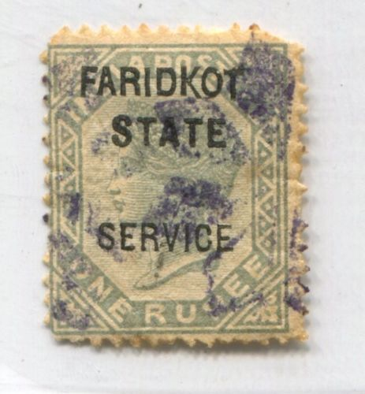 |
|||
| 1 | 1886 | 1 r. gris avec Faridkot State.......................................................................................................... | Fr. 1.25 |
| 2 | 1886 | 1 r. gris avec Faridkot State Service | Fr. 2.50 |
GIBRALTAR - 1886. |
|||
| Number | Year | Description | Price in Fr. |
T. de BERMUDA, vrais avec GIBRALTAR en surcharge imitation |
|||
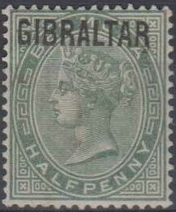  |
|||
| 1 | 1886 | 1/2 p. vert............................................................................................................ | Fr. 0.60 |
| 2 | 1 p. carmin | Fr. 0.60 | |
| 3 | 2 1/2 p. blue | Fr. 1.-- | |
| 4 | 4 p. orange | Fr. 3.-- | |
| 5 | 6 p. lilas | Fr. 5.-- | |
| 6 | 1 s. bistre | Fr. 8.-- | |
T. de BERMUDA et surcharge GIBRALTAR tout imitation |
|||
|
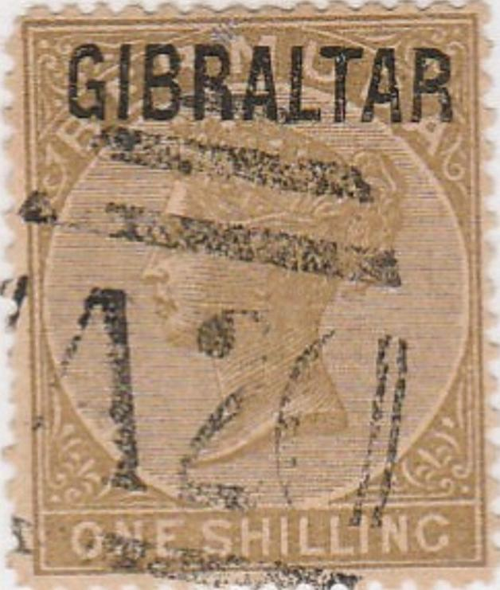 |
|||
| 7 | 2 p. violet fil. C.A. dent 14 | Fr. 1.50 | |
| 8 | 4 p. orange fil. C.A. dent 14 | Fr. 1.50 | |
| 9 | 6 p. lilas fil. C.A. dent 14 | Fr. 3.-- | |
| 10 | 1 s. bistre fil. C.A. dent 14 | Fr. 5.-- | |
The above no.7 of Gibraltar is probably the forgery described in the Serrane guide. There it is attributed to 'I. Gênes', which I presume is Nino Imperato from Genoa. The forgery has a forged watermark and the overprint is badly done. Imperato is known to offer forgeries made by Oneglia.
GUATEMALA - 1881. |
|||
| Number | Year | Description | Price in Fr. |
| 1 | 1881 | 2, 5, 20 cent. erreur centre renversée et 2, 5, 20 cent. centre droit, le 6 pieces......................................... | Fr. 6.-- |
GUYANE ANGLAISE. |
|||
| Number | Year | Description | Price in Fr. |
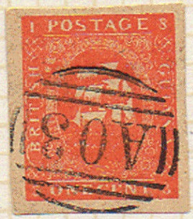 |
|||
| 7 | 1 c vermillon sans traite blanc au dessous de l'ovale...................................................... | Fr. 2.-- | |
| 8 | 1 c. brun rouge sans traite blanc au dessous de l'ovale | Fr. 2.-- | |
| 9 | 4 c. bleu sans traite blanc au dessous de l'ovale | Fr. 1.-- | |
| 10 | 4 c. bleu fonce sans traite blanc au dessous de l'ovale | Fr. 1.-- | |
| 11 | 1 c. rouge avec traite blanc au dessous de l'ovale | Fr. 2.-- | |
| 12 | 4 c. bleu avec traite blanc au dessous de l'ovale | Fr. 1.-- | |
| 13 | 4 c. bleu chiffres des angles encadrés | Fr. 1.50 | |
| 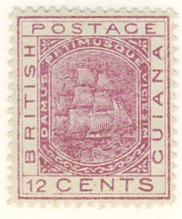 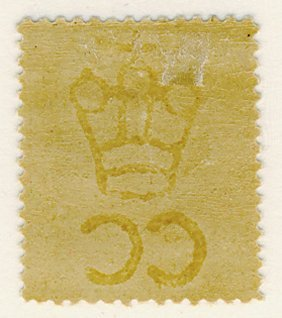 |
|||
| 14 | 1876 | 1, 2, 4, 6, 8, 12, 24, 48, 96 c. fil. C. C. dent. la serie de 9 pieces | Fr. 5.-- |
| 15 | 4 c bleu dent. 12 | Fr. 5.-- | |
| 16 | 1878 | 6 c. brun du 1876 avec un trait sur le valeur et un vertical en surch. | Fr. 0.70 |
| 17 | 1878 | 6 c. brun du 1876 avec un trait sur le valeur et un horizzontal en surch. | Fr. 0.50 |
| 18 | 1878 | 4 c. bleu du 1876 avec deux trait sur le valeur et un vertical en surch. | Fr. 0.90 |
| 19 | 1878 | 6 c. brun du 1876 avec deux trait sur le valeur et un vertical en surch. | Fr. 0.90 |
| 20 | 1878 | 8 c. rose du 1876 avec deux trait sur le valeur et un vertical en surch. | Fr. 5.-- |
| 21 | 1878 | 4 c. bleu du 1876 avec un trait sur le valeur et un vertical en surch. | Fr. 1.-- |
| 22 | 1878 | 8 c. rose du 1876 avec un trait sur le valeur et un vertical en surch. | Fr. 1.50 |
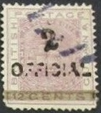 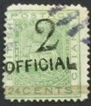 |
|||
| 23 | 1881 | 1 c. sur 48 rose T. du 1876 avec OFFICIAL en surch. | Fr. 1.-- |
| 24 | 1881 | 2 c. sur 12 violet T. du 1876 avec OFFICIAL en surch. | Fr. 0.50 |
| 25 | 1881 | 2 c. sur 24 vert T. du 1876 avec OFFICIAL en surch. | Fr. 0.60 |
| EN PREPARATIONS. | |||
| 1877 T. de SERVICE avec OFFICIAL sur T. du 1876. | |||
|
|||
| 26 | 1877 | 1 c. gris | Fr. 1.50 |
| 27 | 2 c. orange | Fr. 0.50 | |
| 28 | 4 c. bleu | Fr. 2.-- | |
| 29 | 6 c. brun | Fr. 1.-- | |
| 30 | 8 c. rose | Fr. 2.50 | |
| 31 | 12 c. violet | Fr. 0.25 | |
| 32 | 24 c. vert | Fr. 0.40 | |
| 33 | 48 c. rouge brun | Fr. 0.60 | |
| 34 | 96 c. bistre | Fr. 2.50 | |
| 1888-89 T. fis. post. tipe 1876 avec INLAND REVENUE et valeur en surcharge: | |||
|
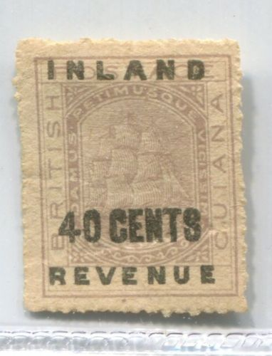 |
|||
| 35 | 1,2,3,4,6,8, 10, 20, 40, 72 c. lilas serie de 10 timbres | Fr. 2.50 | |
| 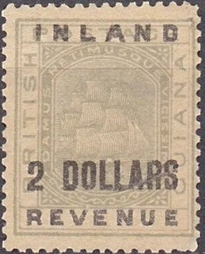
|
|||
| 36 | 1, 2, 3, 4, 5 $ vert - serie de 5 timb. | Fr. 10.-- | |
The 1876 forgeries can be distinguished by the letters "H" (genuine stamps have a more squeezed "H") and "R" (in the genuine stamps the leg of this letter is quite small) of "BRITISH" for example.
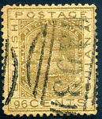
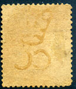
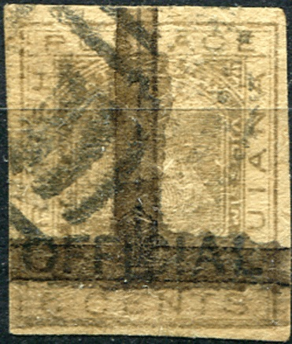
This forgery appears to have the bars with "1" cancel
as often found on Oneglia forgeries.
GWALIOR 1885. |
|||
| Number | Year | Description | Price in Fr. |
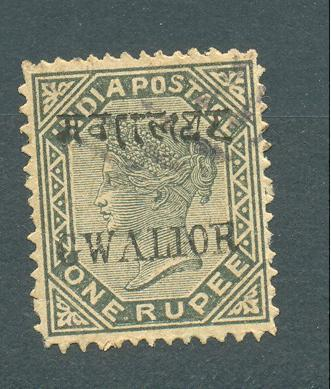 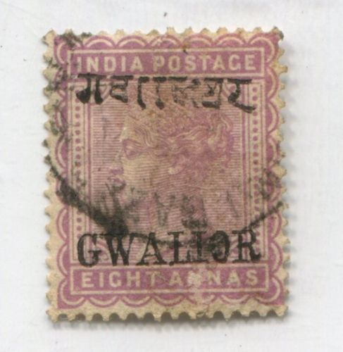 1 Rupee stamp and overprint forged and 8 a genuine stamp, forged overprint |
|||
| T. des INDES ANGL. vrais avec surch. imitation | |||
| 1 | 1885 | 4 a. vert....................................................................................................................................... | Fr. 5.-- |
| 2 | 8 a. violet | Fr. 5.-- | |
| 3 | 1 r. tout imitations | Fr. 3.-- | |
| 4 | 1 r. gris surch. rouge | Fr. 0.80 | |
| 5 | 1 r. gris surch. rouge | Fr. 0.50 | |
| 6 | 1 r. carmin et vert T. vrais | Fr. 0.50 | |
HAWAI 1883. |
|||
| Number | Year | Description | Price in Fr. |
| 1 | 1883 | 100 c carmin .................................................................................................................................... | Fr. 0.90 |
| 2 | 1893 | 100 c carmin avec surch. 1893 | Fr. 0.60 |
HOI-HAO - 1901. |
|||
| Number | Year | Description | Price in Fr. |
T.d'Indo C. avec surch. rouge |
|||
| 4 | 50 c rose. ......................................................................................................................................... | Fr. 0.50 | |
| 5 | 75 c violet sur orange | Fr. 1.-- | |
| 6 | 1 fr. olive . | Fr. 3.-- | |
| 7 | 5 fr. lilas | Fr. 3.-- | |
Thus far I have only seen forgeries of Canton,
made by the forger Fournier.
The above listed forgeries are most likely the same forgeries
that Oneglia made for Indo China.
ISLANDE - 1873. |
|||
| Number | Year | Description | Price in Fr. |
|
|||
| 1 | 1873 | 2 s. bleu dent 14.............................................................................................................................. | Fr. 1.-- |
| 2 | 16 s. jaune dent 14 | Fr. 1.-- | |
| 3 | 3 s. gris dent 12 | Fr. 0.60 | |
| 4 | 3 s. gris non dent | Fr. 1.-- | |
| 5 | 4 s. carmin non dent | Fr. 1.-- | |
| 6 | 8 s. brun non dent | Fr. 1.-- | |
| 7 | 16 s. jaune non dent | Fr. 1.-- | |
| 8 | 5 a. bleu dent. 14 | Fr. 0.60 | |
| 9 | 20 a. violet dent. 14 | Fr. 0.30 | |
| 10 | 5 a. bleu dent. 12 | Fr. 0.30 | |
| 1892 T. de 1876-01 avec surch. GILDI 02-03: | |||
| 11 | 5 a. vert sur. noir dent. 12 | Fr. 1.50 | |
| 12 | 6 a. gris sur. noir dent. 12 | Fr. 2.-- | |
| 13 | 20 a. bleu sur. noir dent. 12 | Fr. 2.50 | |
| 14 | 5 a. vert sur. noir dent. 14 | Fr. 2.50 | |
| 15 | 6 a. gris sur. rouge dent. 14 | Fr. 1.-- | |
| 16 | 10 a. carmin sur. noir dent. 14 | Fr. 5.-- | |
| 17 | 20 a. rouge sur. rouge dent. 14 | Fr. 2.50 | |
| 18 | 5 a. vert sur. rouge renverse | Fr. 1.-- | |
| 19 | 6 a. gris sur. rouge renverse | Fr. 1.-- | |
| 20 | 10 a. carmin sur. noir renverse | Fr. 1.-- | |
| 21 | 40 a. violet sur. noir renverse | Fr. 2.-- | |
I conclude that these are Oneglia forgeries for
the following reasons:
1) I've seen some of them in a batch of manily Oneglia forgeries.
2) All the varieties (imperforate stamps, inverted overprints)
correspond to the ones listed in Oneglia's pricelist.
The cancel on all of these forgeries appears to be
"REYKJAVIE 26 ?", genuine cancels should have
"REYKJAVIK" (with a "K" at the end?).
INDES ANGL. 1855. |
|||
| Number | Year | Description | Price in Fr. |
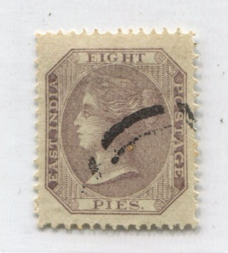 |
|||
| 1 | 1855 | 8 p. lilac papier azur ...................................................................................................................... | Fr. 4.-- |
INDO-CHINE - 1892. |
|||
| Number | Year | Description | Price in Fr. |
| 1 | 50 c rose. ....................................................................................................................................... | Fr. 0.10 | |
| 2 | 75 c violet sur orange | Fr. 0.20 | |
| 3 | 1 fr. olive . | Fr. 0.15 | |
| 4 | 7 fr. lilas (this should have been 5 fr.) | Fr. 0.50 | |
These forgeries were probably used to produce the forgeries of Canton and Hoi-Hao.
JHIND. |
|||
| Number | Year | Description | Price in Fr. |
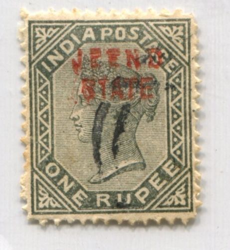 |
|||
| 1 | 1885 | 1 r. gris T. Indes ang. avec surch. ....................................................................................................... | Fr. 5.-- |
| 2 | 1886 | 1 r. gris T. Indes ang. avec surch. | Fr. 2.50 |
| 3 | 1885 | 8 a violet T. Indes ang. avec surch. | Fr. 5.-- |
| 4 | 1886 | 8 a violet T. Indes ang. avec surch. | Fr. 5.-- |
LEVANT RUSSES - 1876. |
|||
| Number | Year | Description | Price in Fr. |
T. vrais due 1868 avec valeur en surcharge imitation. |
|||
|
|||
| 10 | 1876 | 1er Tipe 8 s. 10 k. carm. et vert sur noir.............................................................................................. | Fr. 0.60 |
| 11 | 1er Tipe 8 s. 10 k. carm. et vert sur bleu | Fr. 0.60 | |
| 12 | 1er Tipe 8 s. 10 k. carm. et vert sur noir renversé | Fr. 1.-- | |
| 13 | 1er Tipe 8 s. 10 k. carm. et vert sur blue renversé | Fr. 0.60 | |
| 14 | 2d Tipe 8 s. 10 k. carm. et vert sur noir renversé | Fr. 0.60 | |
| 15 | 2d Tipe 8 s. 10 k. carm. et vert sur blue renversé | Fr. 0.80 | |
| 16 | 2d Tipe 8 s. 10 k. carm. et vert sur noir renversé | Fr. 1.20 | |
| 17 | 2d Tipe 8 s. 10 k. carm. et vert sur blue renversé | Fr. 1.40 | |
| 18 | 3me Tipe 7 s. 10 k. carm. et vert sur noir renversé | Fr. 3.-- | |
| 19 | 3me Tipe 7 s. 10 k. carm. et vert sur blue renversé | Fr. 3.-- | |
| 20 | 3me Tipe 7 s. 10 k. carm. et vert sur noir renversé | Fr. 5.-- | |
| 21 | 3me Tipe 7 s. 10 k. carm. et vert sur blue renversé | Fr. 5.-- | |
| Série de 12 pieces fr.20. | |||
The Russian Levant surcharged stamps were extensively forged. All surcharges on the stamps with perforation 11 1/2 are forgeries. I think it will be very difficult to ever find the actual forged overprints made by Oneglia, but they would most likely look like the ones shown above.
LAGOS. |
|||
| Number | Year | Description | Price in Fr. |
| 1 | 1874 | 1 p. lilas C. C. 12 | Fr. 0.60 |
| 2 | 1874 | 2 p. bleu C. C. 12 | Fr. 0.80 |
| 3 | 1874 | 3 p. brun C. C. 12 | Fr. 0.80 |
| 4 | 1874 | 4 p. carmin C. C. 12 | Fr. 1.-- |
| 5 | 1874 | 6 p. vert C. C. 12 | Fr. 0.60 |
| 6 | 1874 | 1 s. orange C. C. 12 | Fr. 0.75 |
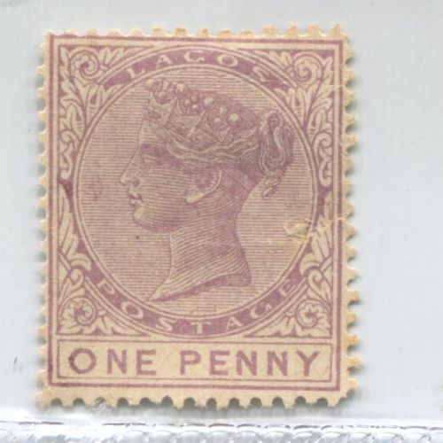
|
|||
| 7 | 1875 | 1 p. lilas C. C. 14 | Fr. 0.50 |
| 8 | 1875 | 2 p. bleu C. C. 14 | Fr. 0.60 |
| 9 | 1875 | 3 p. brun C. C. 14 | Fr. 0.60 |
| 10 | 1875 | 1 s. orange C. C. 14 | Fr. 1.25 |
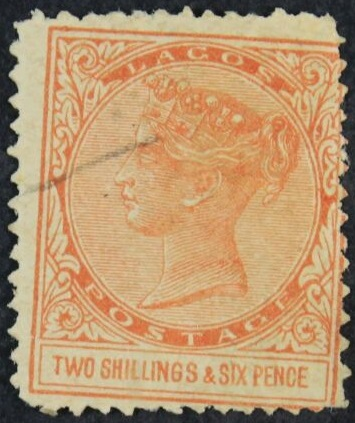 |
|||
| 11 | 1882 | 1 p. lilas C. A. 14 | Fr. 0.50 |
| 12 | 1882 | 2 p. bleu C. A. 14 | Fr. 0.70 |
| 13 | 1882 | 3 p. brun C. A. 14 | Fr. 0.60 |
| 13bis | 6 p. vert olive C.A. 14 | Fr. 0.40 | |
| 14 | 2/6 brun C. A. 14 | Fr. 6.-- | |
| 15 | 5 s. bleu C. A. 14 | Fr. 7.-- | |
| 16 | 10 s. lila brun C. A. 14 | Fr. 10.-- | |
MAURICE. 1860 |
|||
| Number | Year | Description | Price in Fr. |
| 22 | 1860 | 6 p. vert dent. 14 .............................................................................................................................. | Fr. 1.50 |
| 23 | 6 p. violet dent. 14 | Fr. 0.70 | |
| 24 | 9 p. lilas. dent. 14 | Fr. 0.30 | |
| 25 | 1 s. bistre dent. 14 | Fr. 0.70 | |
| 26 | 1 s. vert dent. 14 | Fr. 2.-- | |
| 27 | 9 p. vert 1863-70 dent. 14 fil. C. C. | Fr. 3.-- | |
| 28 | 5 s. violet rouge dent. 14 fil. C. C. | Fr. 0.50 | |
| 29 | 5 s. violet dent. 14 fil. C. C. | Fr. 0.75 | |
| 30 | 1 s. sur 5 s, violet dent. 14 fil. C. C. | Fr. 3.-- | |
| 31 | 1 s. sur 5 s. violet rouge 1863-70 dent. 14 fil. C. C. | Fr. 2.50 | |
 |
|||
| 32 | 1879 | 38 c. violet 1879 dent. 14 fil. C. C. | Fr. 1.50 |
Oneglia forgeries, 1906 catalogue, Supplement, part 3

{kind=link}
{kind=link}
{kind=link}
{kind=link}
{kind=link}
{kind=link}
{kind=link}
{kind=link}
{kind=link}
{kind=link}
{kind=link}
{kind=link}
{kind=link}
{kind=link}
{kind=link}
{kind=link}
{kind=link}
{kind=link}
{kind=link}
{kind=link}
{kind=link}
{kind=link}
{kind=link}
{kind=link}
{kind=link}
{kind=link}
{kind=link}
{kind=link}
{kind=link}
{kind=link}
{kind=link}